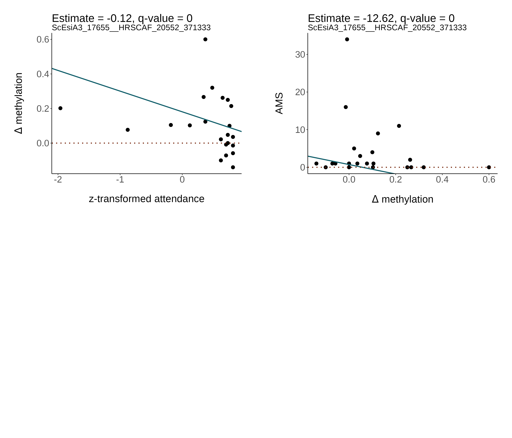
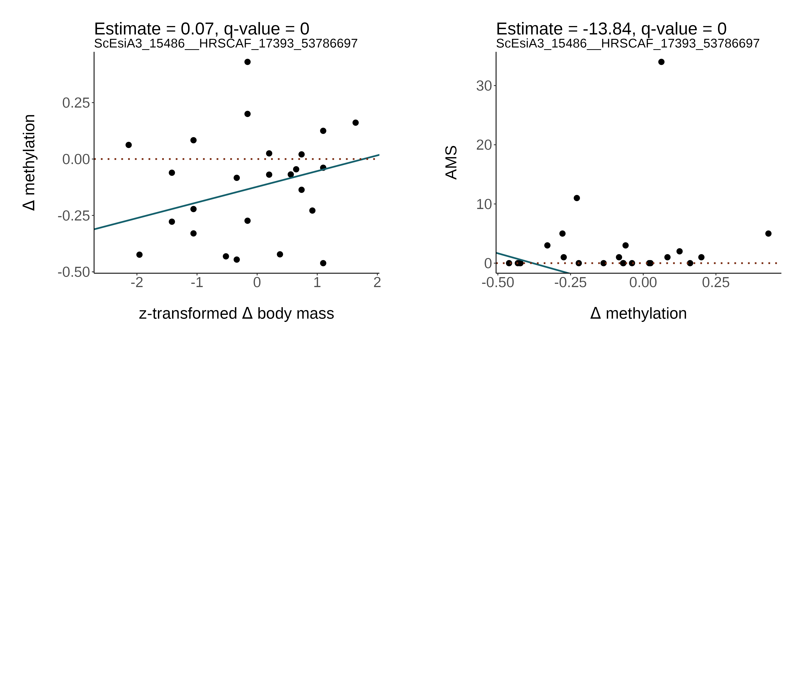
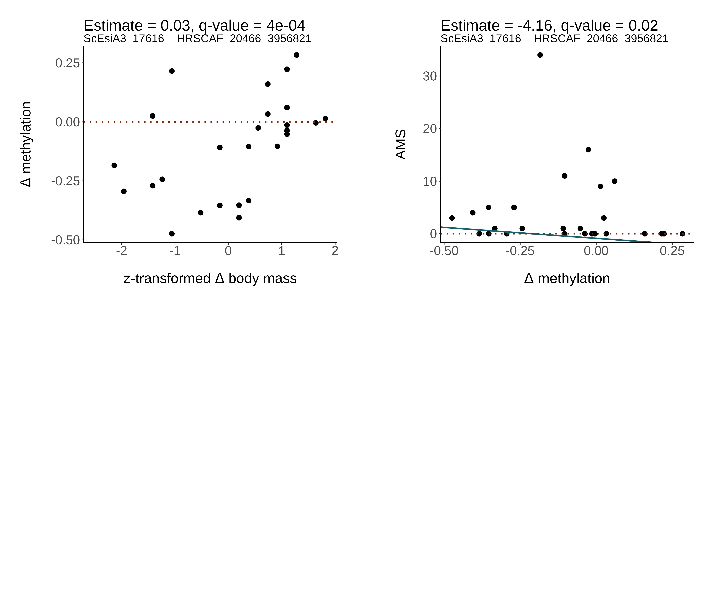
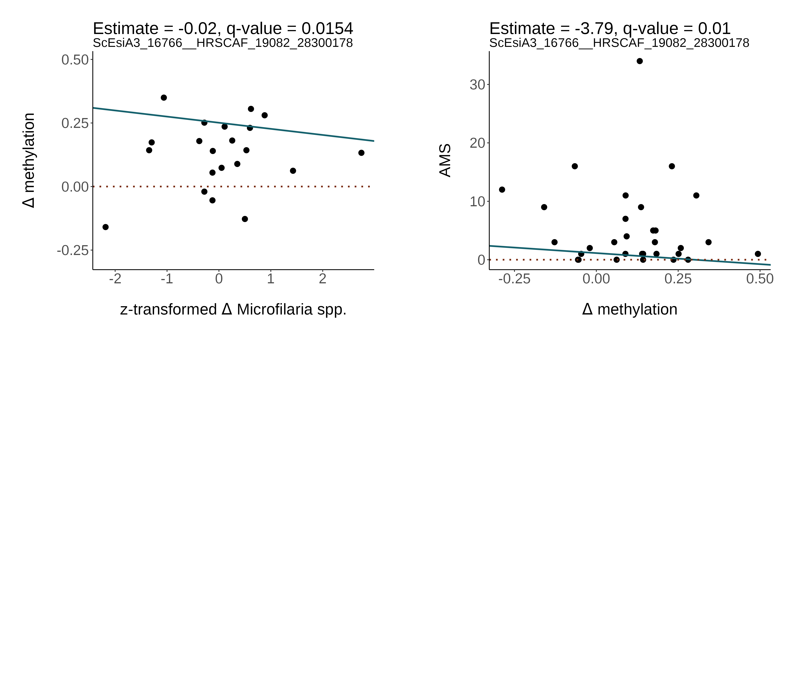
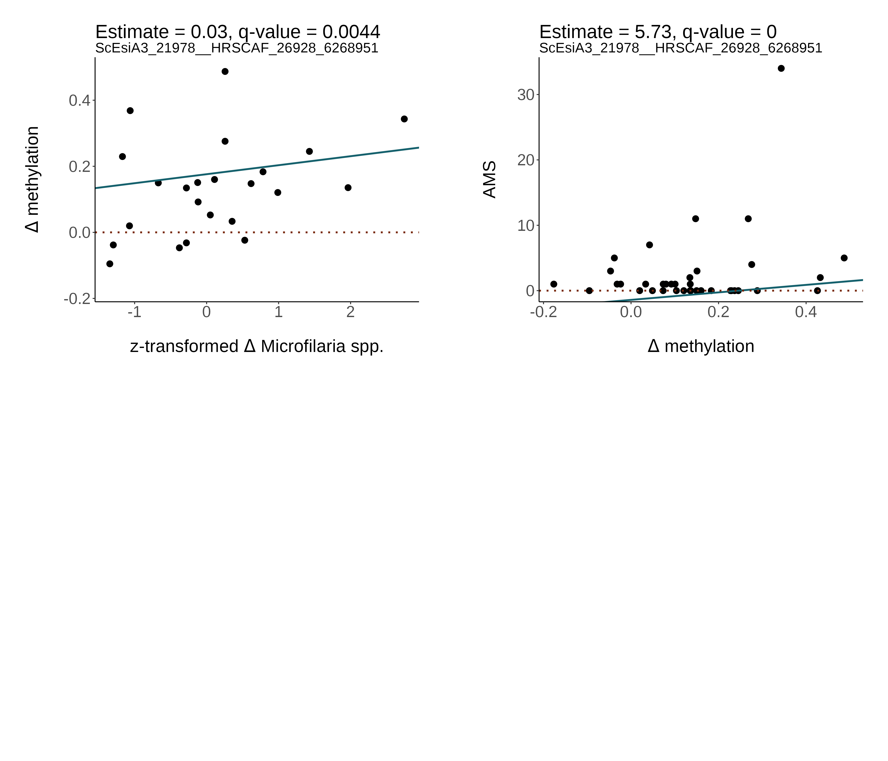
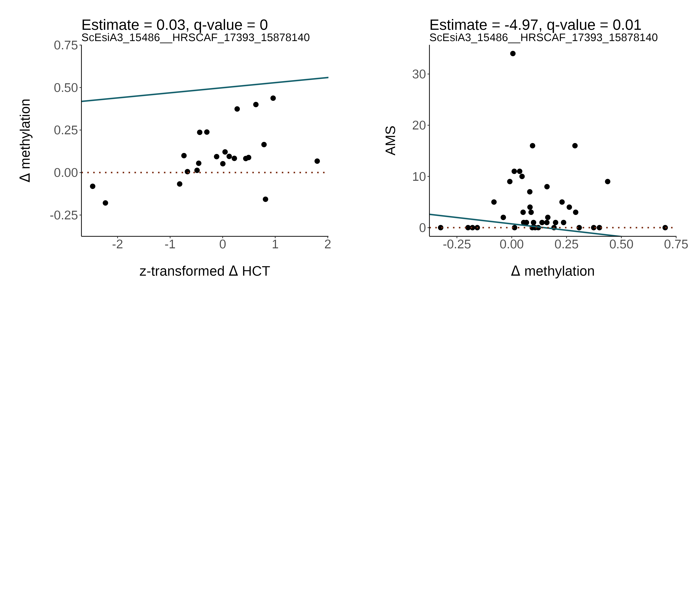
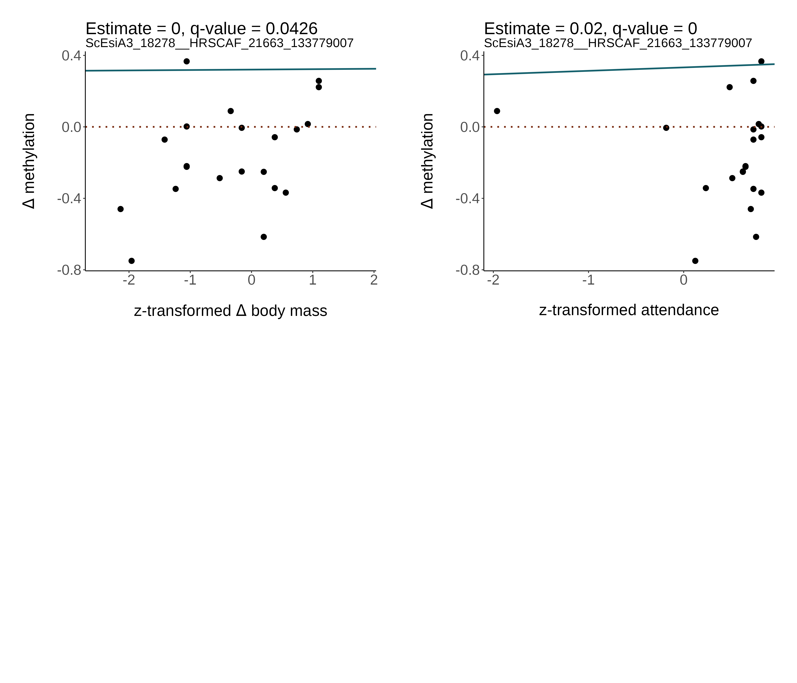
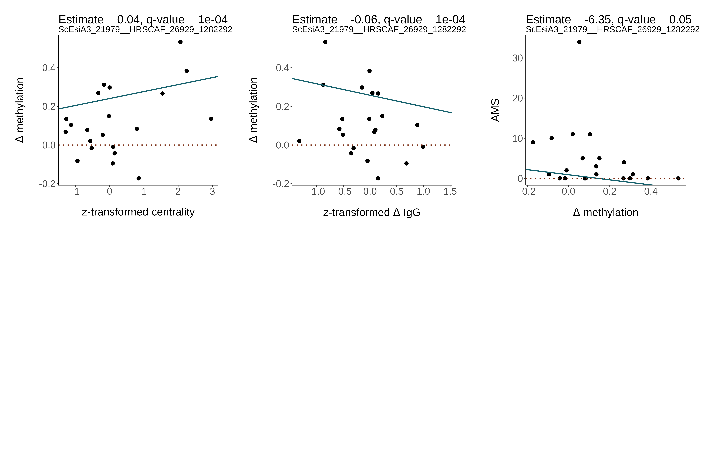

9 Mutual CpG sites
Are there CpG sites that are significant in multiple models?
It would be interesting to see whether a CpG site is both associated with reproductive effort as well as mating success, with physiological changes and mating success, or with both reproductive effort and physiological changes. For example, a CpG site could be significantly associated with fighting rate and the change in methylation might also be associated with reproductive success.
I checked whether there are mutual significant CpG sites among models, and find the following:
1 CpG site is both significant for lek attendance and annual mating success
2 CpG sites are significant for changes in body mass and annual mating success
2 CpG sites are significant for changes in Microfilaria spp. and annual mating success
1 CpG site is both significant for changes in HCT and annual mating success
1 CpG site is both significant for lek attendance and changes in body mass
1 CpG site is significant for lek centrality, changes in IgG and annual mating success
I plotted the raw data below, where on the left panels you can see the relationship between the effort / physiological trait and delta methylation, and on the right side the relationship between delta methylation and AMS for the same CpG site.
9.1 Raw data
9.1.1 Reproductive effort vs AMS

9.1.2 Physiological changes vs AMS
    
9.1.3 Reproductive effort vs physiological changes

9.1.4 Highlight
There is one CpG site significant for three things: lek centrality, changes in IgG and annual mating success 